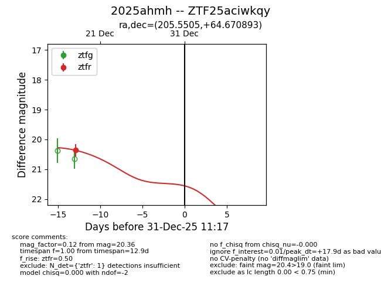
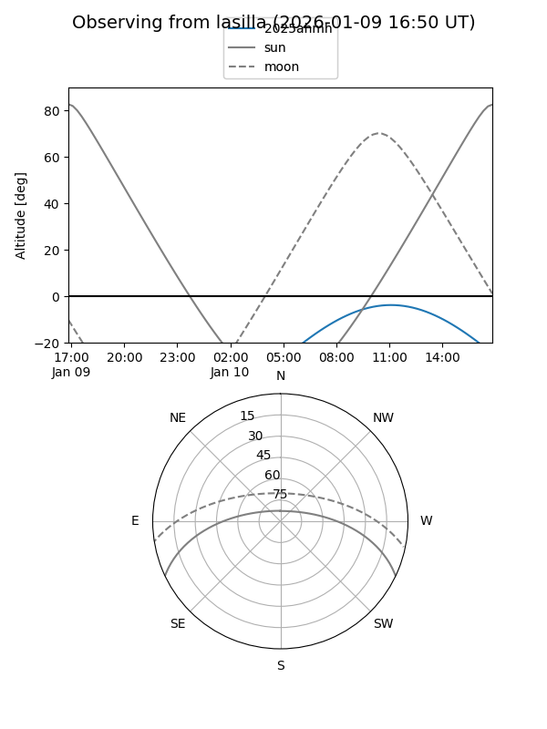
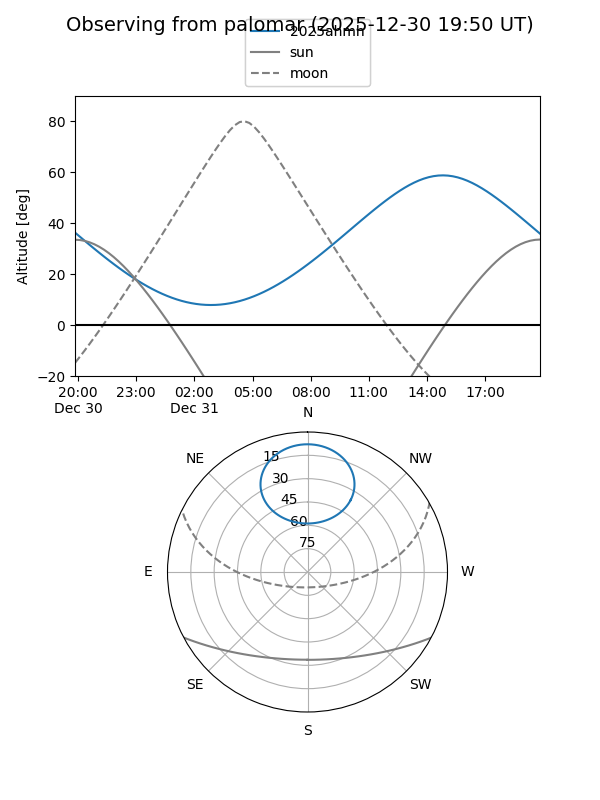
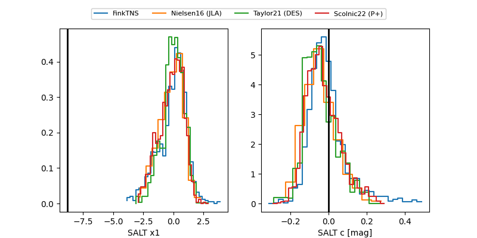

2025ahmh
Target 2025ahmh at 2025-12-31 18:00
Aliases and brokers:
FINK: link
Lasair: link
ALeRCE: link
TNS: link
YSE: link
alt names
ZTF25aciwkqy (ztf,fink_ztf)
2025ahmh (tns,yse)
Coordinates:
equatorial (ra, dec) = 205.5505,+64.67089
equatorial (HMS+DMS) = 13:42:12.12,+64:40:15.21
galactic (l, b) = (114.2305,+51.59119)
Flags:
Photometry:
last ztfr=20.36
1 ztfr detections
Lightcurve

Visibility


Additional plots
